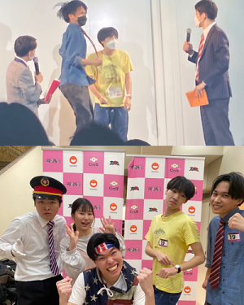

お笑いサークル？
【お笑いサークルとは】
演者→ライブで実際にネタを披露したり
ライブを主催したりする。
スタッフ→ライブの手伝い、主催。
吉本が主催する学生芸人の大会の決勝は、ルミネtheよしもとで開催。
チケ発30秒で完売するなど近年ではかなりの人気コンテンツに。
ミルクボーイ、真空ジェシカ、ラランド、令和ロマン、ママタルトなど
大学お笑い出身者が増加。
何が楽しい？
・仕事ではないのでテレビではできないような自由なネタができる。
・大会の規模が大きく緊張感がある。
(300人のお客さんの前でネタをすることも。)
・周りの人が面白く。他大学の友達も沢山作れる。
・先輩後輩関係なく面白ければ結果を残せる。
・プロの芸人さんに会えることがある。
(錦鯉、ジャルジャル、オダウエダ、さすらいラビーなど)
・何より楽しい。
嬉しかったこと
・自分が主催した単独ライブが100席満席で埋まり、
10万円近くの利益が出たこと！
・サツマカワRPGさんに「面白い」と言われたこと！
・ファンと名乗る方からライブ終わりに差し入れをもらったこと。
・プロのライブに呼ばれることがあったこと。
・大きめのライブで優勝したこと。
・就職面接でサークルの話題を出すととても食いついていただけるの
で、
話の話題が尽きないこと。
戦績
4年間で出たライブ：120本
主催ライブ数：2本
- 主な戦績 -
ガチプロ2021 決勝7位
大学芸会2021 敗復進出
レジスタリーグ 優勝
全大学同期ライブ 3連覇
NOROSHI2023 準決勝進出など
